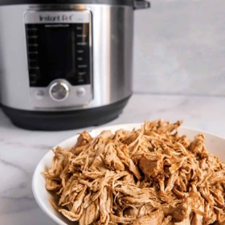

← All recipes
Instant Pot Mexican Shredded Chicken

Servings: 4 · Prep: 5 mins · Cook: 30 mins
Ingredients
- 2 pounds boneless skinless chicken breasts
- 1 cup low sodium chicken broth
- 1 tablespoon dark chili powder
- 1 teaspoon ground cumin
- 1 teaspoon smoked paprika
- 1/2 teaspoon dried oregano
- 1/2 teaspoon garlic powder
- 1/2 teaspoon Kosher salt
- 1/2 teaspoon fresh ground black pepper
Directions
- Pour chicken broth into the instant pot and place the chicken breasts side by side into the broth. Mix seasonings together in a small bowl and then evenly sprinkle over the top of the chicken.
- Place the lid onto the pressure cooker and lock into place. Turn on instant pot, select “Pressure Cook” setting, set to “high pressure” for 10 minutes, and start. Allow to come to pressure, depending on how much chicken is inside, can take 8-10 minutes. After it has come to pressure it will cook for 10 minutes.
- Once the timer has expired and the chicken has finished cooking, do not touch it. Allow the pressure to release naturally. This should take about 10-12 minutes. Once the float valve is all the way down, signaling the pressure has released, carefully open the instant pot.
- You can shred the chicken inside of the pot, but the sides will be very hot. I opt to use tongs to remove the chicken breast and place onto a cutting board to shred with two forks. Once you have shredded the chicken, I add it back into the pot, and mix it all up with the delicious juices.
- Use the chicken in your favorite Mexican dish or for meal prep!
Notes
Different size Instant Pots have different minimum liquid requirements, this recipe was made using a 6QT ultra instant pot. See your user manual for different size pots.
If you don't have all of these seasonings or want to make your prep time shorter, you can just buy a premade Mexican seasoning of your choice.
If your chicken breasts are extremely thick, consider cutting them in half lengthwise to make them thinner. I have experienced toughness with extremely thick breasts.
Natural pressure release will vary depending on the size of breasts, do not open the instant pot until it is safe to do so and the valve is completely down.
I would add 2 more minutes to the cooking time if using frozen chicken breasts.
Note: the cook time takes into consideration the 8-10 minutes to come to pressure, 10 minute cook time, then the 10-12 minutes of natural release
Original source: girlwiththeironcast.com